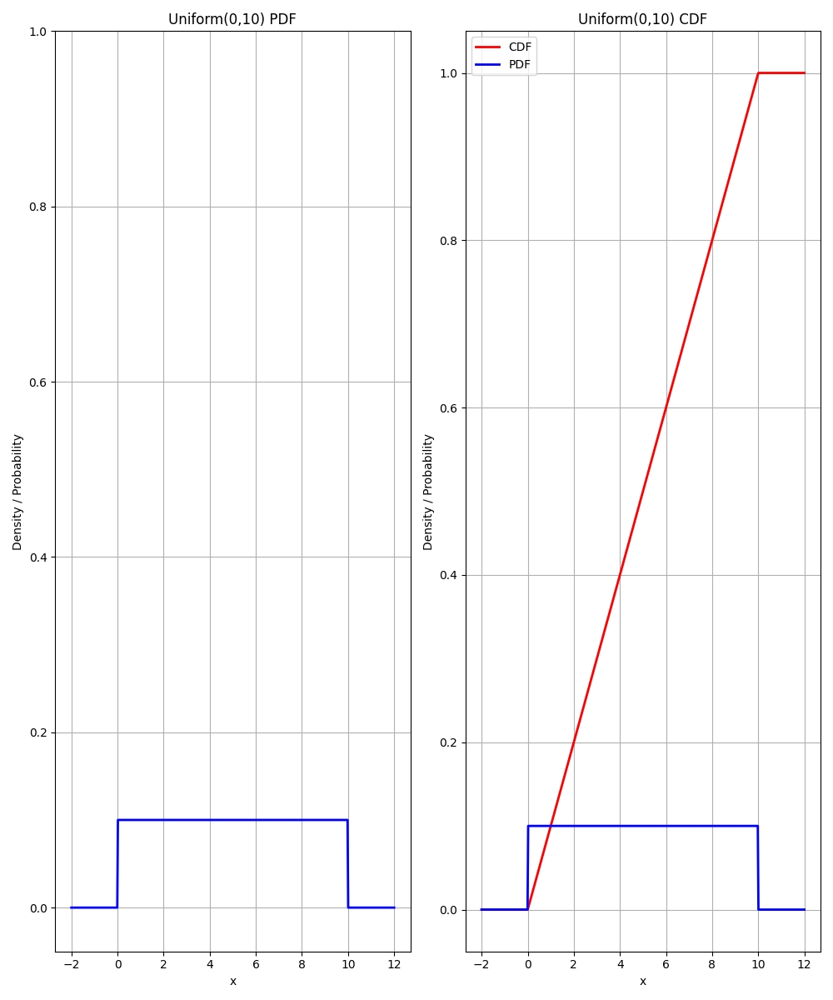
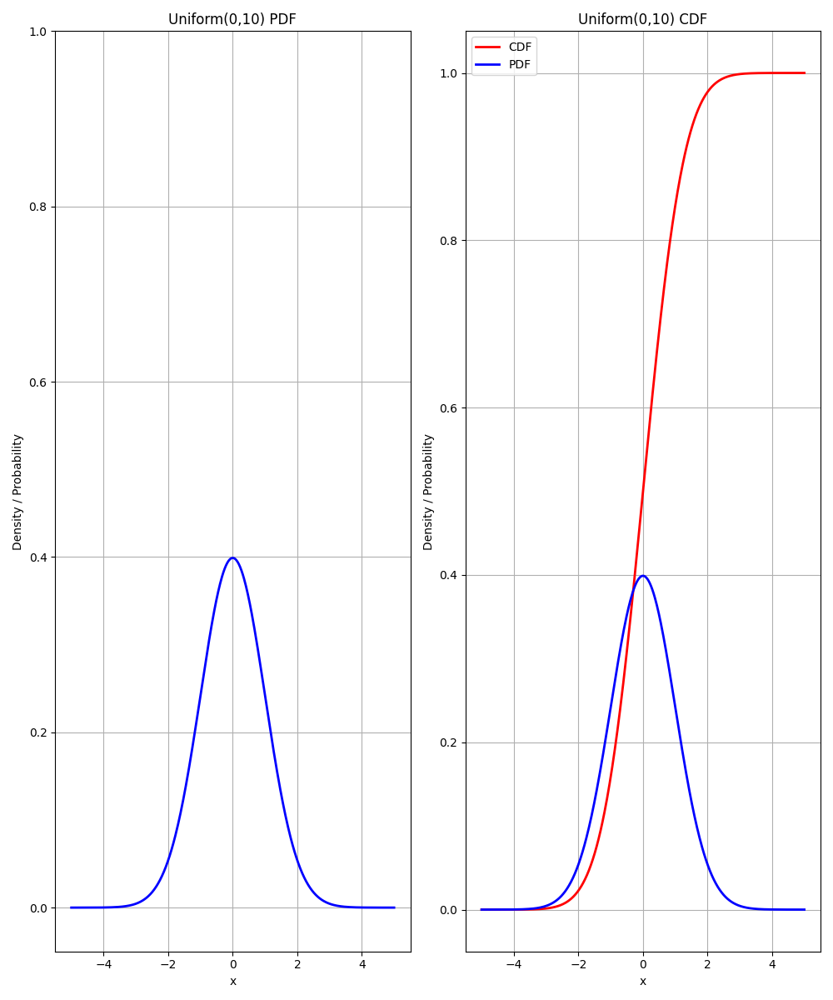
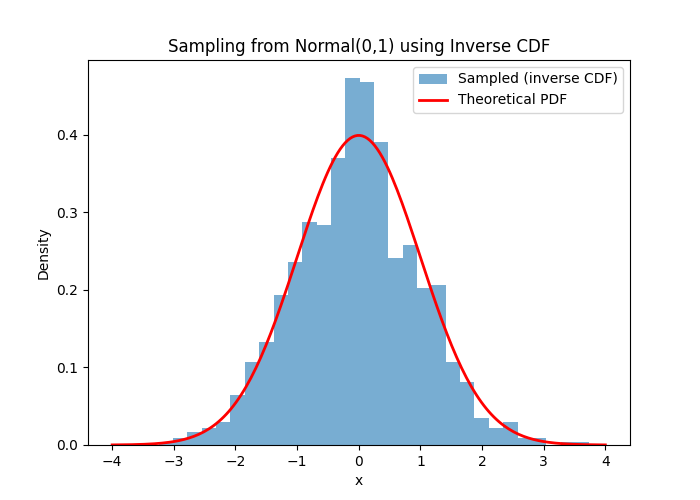
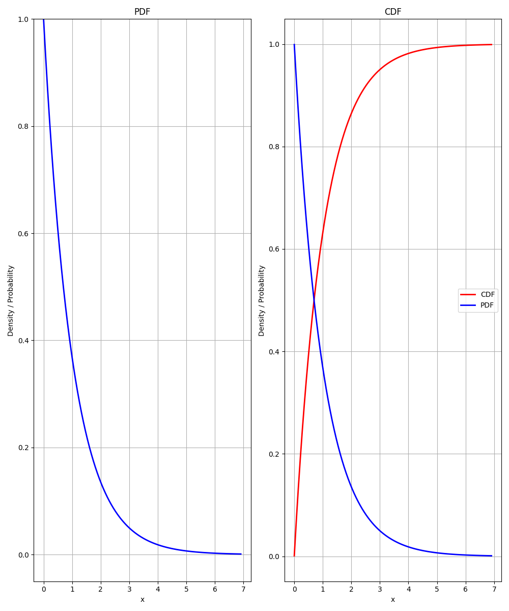

Section 1.8 Continuous Probability Distributions
Continuous random variables take values on an interval of the real line. Unlike discrete random variables, we do not assign probability to single points (which would be zero). Instead, we assign probability to intervals, using probability density functions (PDFs), denoted by \(\rho\text{.}\) For a random variable \(X\text{:}\)
\begin{equation*}
P( x \le X \le x + dx ) = \rho(x)\,dx.
\end{equation*}
To faciliate analytical work, we introduce a cumulative distribution function (CDF), denoted by \(F\text{,}\) that gives probability of the event that \(X \le x\) for some particular \(x\text{.}\)
\begin{equation*}
F(x) = P( X \le x) = \int_{-\infty}^x\, \rho(x')\,dx'.
\end{equation*}
Clearly, normalization of probability requires that
\begin{equation*}
F (+\infty) = \int_{-\infty}^\infty\, \rho(x)\,dx = 1.
\end{equation*}
In this section, we will discuss three distributions that are important for ML use.
- Uniform: All values equally likely
- Normal (Gaussian): Bell-shaped curve
- Exponential: Time until an event occurs
There are, of course, other distributions such as beta and gamma distributions that are also in common use. By presenting just these three here, I hope to give the reader enough feel for what to look for when studying other distributions.
Subsection 1.8.1 Uniform Distribution
When a random variable \(X\) is equally likely to take any value between two real numbers \(a\) and \(b\text{,}\) we say that the distribution is uniform between these values. The distribution is usually designated by \(U(a,b)\) with \(a \lt b\text{,}\) and say that
\begin{equation*}
X \sim U(a,b),
\end{equation*}
which means that
\begin{equation}
P(x \le X \le x + dx) \equiv \rho(x)\, dx = \begin{cases}
\frac{1}{b-a}\, dx \amp \text{if } a \le x \le b \\
0 \amp \text{otherwise}
\end{cases}\tag{1.8.1}
\end{equation}
where the part without the \(dx\) is the PDF of the distribution, which we denote by the Greek letter rho, \(\rho\text{.}\)
The mean value of the distribution will clearly be half way between \(a\) and \(b\) as can easily be computed by performing the simple integral.
\begin{equation*}
\langle X \rangle = \int_{a}^{b}\, x\, \rho(x)\, dx = \frac{1}{b-a}\,\int_a^b x dx = \frac{1}{b-a}\left( b^2 - a^2\right) = \frac{b + a}{2}.
\end{equation*}
The variance, which is square of the standard deviation \(\sigma\text{,}\) is similarly calculated to yield
\begin{equation*}
\text{Var}(X) = \langle X^2 \rangle - \langle X \rangle^2 = \frac{(b-a)^2}{12},
\end{equation*}
where
\begin{equation*}
\langle X^2 \rangle = \int_a^b x^2\,\rho(x)\, dx = \frac{1}{3}\left(b^2 + ba + a^2 \right).
\end{equation*}
Thus, standard deviation of \(U(a,b)\) is:
\begin{equation*}
\sigma = \frac{|b-a|}{2\sqrt{3}}.
\end{equation*}
The cumulative distribution function, \(F(x)\text{,}\) which gives the probability that \(X \le x\) is easily calculated for uniform distribution.
\begin{equation}
F(x) = \int_{-\infty}^x\, \rho(x')\,dx' \equiv \text{ Probability that } X \lt x,\tag{1.8.2}
\end{equation}
where I used \(x'\) for the dummy variable since \(x\) now is a particular value. This will be a step function since the formula resulting from the integration depends on where the point \(x\) happens to lie.
\begin{equation}
F(x) = \begin{cases}
0 \, \amp \text{if } x \lt a \\
\frac{x-a}{b-a} \amp \text{if } a \le x \le b \\
1 \amp \text{if } x \gt b.
\end{cases}\tag{1.8.3}
\end{equation}
The last line says that probability that \(X\) has any value less than any value in \((b,\infty)\) is 1.0 since obviously the entire range \([a,b]\) is included in this case. The second line says that the probability increases linearly between \(a\) and \(b\text{.}\)
Figure 1.8.1 shows plots of PDF and CDF of uniform distribution \(U(0,10)\text{.}\) You can see that as we scan through the interval of the uniform PDF, the probability accumulates in the CDF and eventually, CDF becomes \(1\text{,}\) which represents probability of any of the values in the interval.

To generate these plots import: from scipy.stats import uniform and then use the methods uniform.pdf() and uniform.cdf().
Subsubsection 1.8.1.1 Inverse Uniform CDF
Inverse of a CDF is used for sampling from a distribution. Although, we will see below that inverse CDF of the uniform distribution is trivial, the inverse CDF is highly useful when you need to generate samples from some other distributions such as Normal, Exponential, Gamma, etx.
The inverse of CDF \(F(x)\) is written as \(F^{-1}(x)\) - it’s not a negative one power of \(F\text{;}\) that is just the name of the inverse function. As the name implies when you successively apply \(F\) an \(F^{-1}\) to some number \(x\text{,}\) you would get that number back.
\begin{equation*}
x = F^{-1}\left(\ F (x) \ \right).
\end{equation*}
So, what does it look like for the uniform distribution \(U(a,b\text{?}\) The CDF in the range \([a,b]\) is
\begin{equation*}
F(x) = \frac{x - a}{b - a}\quad a\le x \le b.
\end{equation*}
The inverse will be
\begin{equation*}
F^{-1}(u) = a + (b-a) u.
\end{equation*}
Let’s check if that’s true.
\begin{equation*}
F^{-1}(\ F(x)\ ) = a + (b-a) F(x) = a + (b-a) \frac{x - a}{b - a} = x.
\end{equation*}
So, if you wanted to generate samples in the range \(a \le x \le b\) that act like they are sampled from the uniform distribution \(U(a,b)\text{,}\) you would first generate pseudo-random numbers in unit interval \([0,1]\) using algorithms lke Mersenne Twister. Suppose, you have \(100\) such sample \(u_1, u_2, \cdots, u_{100}\text{.}\) Then, you will plug them in the inverse CDF \(F^{-1}\) to generate samples \(x_1, x_2, \cdots, x_{100}\) from \(U(a,b)\text{.}\)
\begin{equation*}
x_i = F^{-1}(u_i) = a + (b-a) u_i.
\end{equation*}
This is trivial here since we have an analytic expression for the inverse CDF. In other districutions, such as the Gaussian, i.e., Normal distribution, the inverse can only be computed numerically. The stats packages usually have functions that do it for you. For instance, ppf() method in Python/scipy.stats is used for that purpose. In case of uniform distribution, the command is
from scipy.stats import uniform
samples = uniform.ppf(u, loc=a, scale=b-a).
Subsection 1.8.2 Normal (Gaussian) Distribution
The PDF of a Gaussian or Normal distribution is a bell-shaped curve with only two parameters, a mean \(\mu\) and a standard deviation \(\sigma\text{.}\) The name Gaussian is preferred in Physics and Engineering, and Normal is preferred in statistics and data science. In these notes I will use both of them, just for fun.
The PDF of the Gaussian distribution of mean \(\mu\) and standard deviation \(\sigma\) for a scalar variable \(X\) is defined by
\begin{equation}
\rho(x) = \frac{1}{\sqrt{2\pi \sigma^2}}\,\exp\left( - \frac{(x-\mu)^2}{2\sigma^2} \right),\tag{1.8.4}
\end{equation}
where
\begin{equation*}
\exp(a) = e^a.
\end{equation*}
The reason I am writing \(\exp(a)\) rather than \(e^a\) is that exponent in the latter expression usually prints too small on the screen. While doing calculations by hand, you should stick to \(e^a\) notation.
When the distribution of a random variable \(X\) is Gaussian of mean \(\mu\) and standard deviation \(\sigma\text{,}\) i.e., variance \(\sigma^2\) we denote this as a short hand notation by
\begin{equation*}
X \sim \mathcal{N}\left( \mu, \sigma^2\right).
\end{equation*}
The special case of \(\mu = 0\) and \(\sigma = 1\) is called standard normal distribution. A standard normal random variable \(X\) will obey
\begin{equation*}
X \sim \mathcal{N}\left( 0, 1\right).
\end{equation*}
As always, the PDF in Eq. (1.8.4) has the probability interpretation in an infinitesimal interval around \(x\text{.}\)
\begin{equation*}
P(x \le X \le x + dx) = \rho(x)\, dx.
\end{equation*}
Thus, if you want the probability of \(X \in [-1, 3]\text{,}\) you will just integrate it.
\begin{equation*}
P(X \in [-1, 3]) = \int_{-1}^3\, \rho(x) dx = \int_{-1}^3\, \frac{1}{\sqrt{2\pi \sigma^2}}\,\exp\left( - \frac{(x-\mu)^2}{2\sigma^2} \right)\, dx.
\end{equation*}
The CDF \(F(x)\) is just such an integral for the probability of \(X in (-\infty, x]\text{.}\)
\begin{equation}
F(x) = \int_{-\infty}^x\, \frac{1}{\sqrt{2\pi \sigma^2}}\,\exp\left( - \frac{(x'-\mu)^2}{2\sigma^2} \right)\, dx'.\tag{1.8.5}
\end{equation}
If \(x=\infty\text{,}\) then entire real line is included. That would make
\begin{equation*}
F(\infty) = \int_{-\infty}^\infty\, \frac{1}{\sqrt{2\pi \sigma^2}}\,\exp\left( - \frac{(x-\mu)^2}{2\sigma^2} \right)\, dx = 1.
\end{equation*}
The integral is unwieldy and only done numerically. The Fundamental Theorem of Calculus gives us an analytic expression of the derivative of CDF, which is used in formal analytical work.
\begin{equation}
\frac{dF}{dx} = \rho(x) = \frac{1}{\sqrt{2\pi \sigma^2}}\,\exp\left( - \frac{(x-\mu)^2}{2\sigma^2} \right).\tag{1.8.6}
\end{equation}
This is, of course, a general result and applies to all PDF/CDF and forms a powerful tool of formal work. We are not going to do much in that direction.
Figure 1.8.2 shows plots of PDF and CDF of Gaussian distribution \(\mathcal{N}(0,1)\text{.}\)

To generate these plots import: from scipy.stats import uniform and then use the methods uniform.pdf() and uniform.cdf().
The mean and variance of a Gaussian is in the definition itself and can be readily checked if you know how do Gaussian integrals.
\begin{align*}
\amp \text{Mean}(X) = \langle X \rangle = \int_{-\infty}^\infty\, x\, \rho(x)\, dx = \frac{1}{\sqrt{2\pi \sigma^2}}\, \int_{-\infty}^\infty\, x\, \exp\left( - \frac{(x-\mu)^2}{2\sigma^2} \right) dx = \mu. \\
\amp \text{Var}(X) = \langle X^2 \rangle - \langle X \rangle^2 = \sigma^2.
\end{align*}
Here are couple of tricks of doing Gaussian integrals.
\begin{align*}
\amp \int_{-\infty}^\infty \exp\left( -kx^2\right)\, dx = \sqrt{ \frac{\pi}{k} }\\
\amp\int_{-\infty}^\infty x^{2n+1}\,\exp\left( - kx^2 \right)\, dx = 0,\ \text{for } n = 0, 1,2, \cdots\\
\amp \int_{-\infty}^\infty x^{2n}\,\exp\left( - kx^2 \right)\, dx = \int_{-\infty}^\infty \left( -\frac{d}{dk}\right)^n\,\exp\left( - kx^2 \right)\, dx \\
\amp\qquad = \left( -\frac{d}{dk}\right)^n \, \int_{-\infty}^\infty \exp\left( -kx^2\right)\, dx \\
\amp\qquad = \left( -\frac{d}{dk}\right)^n\,\sqrt{ \frac{\pi}{k} } = \frac{\sqrt{\pi}}{4^n}\,\frac{(2n)!}{n!}\frac{1}{k^{n + \frac{1}{2}}}.
\end{align*}
Subsubsection 1.8.2.1 Inverse CDF and Sampling
As we defined for the uniform distribution above, inverse of the Cumulative Distribution Function (CDF) \(F\) is another function, denoted by \(F^{-1}\) (NotE: it’s not \(1/F\text{.}\) The negative power in the symbol is just a symbol.) The functions \(F\) and \(F^{-1}\) are inverses so that when you act by them, one does the effect of the other.
\begin{equation*}
F^{-1}\left( F(x) \right) = x.
\end{equation*}
But unlike the case was with the uniform distribution, here we only know \(F(x)\) in the integral form. However, you can find \(F^{-1}\) of Gaussian distribution numerically. It is already programmed in stats packages. For instance, we can compute the percent point function (PPF), which is the numerical inverse CDF by scipy.stats.norm.ppf() function by passing the appropriate parameters.
The CDF function \(F(x)\) is a mapping from \(\R\) to \([0,1]\text{.}\) The inverse \(F^{-1}\) will map \([0,1]\) to \(\R\text{.}\) To sample randomly from Gaussian distribution means producing random values of \(x \in \R\text{.}\) That means if we obtain random values \(u \in [0,1]\) and feed that into \(F^{-1}\text{,}\) the result will be random values of \(x\) sampled according to the distribution of the \(F\text{,}\) which is Gaussian in the present case. Obtaining random values \(u \in [0,1]\) can be done by just sampling from the uniform distribution \(U(0,1)\text{.}\)
Thus the steps of sampling from a distribution \(F\) is:
- Generate uniform random numbers \(u_1, u_2, \cdots, u_N\, \sim \, U(0,1)\text{.}\)
- Apply \(x_i = \mu + \sigma \times F^{-1}(u_i)\text{,}\) if using inverse of standard normal. If using scipy.stats pacakge, the code for \(F^{-1}\) will be scipy.stats.norm.ppf(\(u_i\text{,}\) loc = \(0\text{,}\) scale = \(1\)). In scipy.stats, you can include the actual loc and scale in the argument itself as shown in the program listing below.
- Use \(x_i\) as your Gaussian samples.
Let us look at an example of drawing from a Gaussian distribution and how the samples match up with the theoretical distribution. This is shown in Figure 1.8.3. It was produced by the code below. Clearly, the histogram based on the samples is very representative of the theoretical curve.
import numpy as np
import matplotlib.pyplot as plt
from scipy.stats import norm
# Parameters
mu, sigma = 0, 1
n_samples = 1000
# Step 1: uniform samples
u = np.random.rand(n_samples)
# Step 2: transform with inverse CDF (ppf)
samples = norm.ppf(u, loc=mu, scale=sigma)
# Plot histogram vs theoretical PDF
x = np.linspace(-4, 4, 200)
pdf = norm.pdf(x, mu, sigma)
plt.figure(figsize=(7,5))
plt.hist(samples, bins=30, density=True, alpha=0.6, label="Sampled (inverse CDF)")
plt.plot(x, pdf, 'r-', lw=2, label="Theoretical PDF")
plt.xlabel("x")
plt.ylabel("Density")
plt.title("Sampling from Normal(0,1) using Inverse CDF")
plt.legend()
plt.show()

Subsection 1.8.3 Exponential Distribution
Exponential distribution is commonly used to model the time between successive events in a Poisson process, where events occur independently and at a constant average rate. The distribution is defined for non-negative values (\(X \ge 0\)) and is characterized by a single parameter, \(\lambda\)(lambda), which is the rate parameter, as described in the section on the Poisson distribution.
The PDF of Exponential distribution is given by
\begin{equation}
\rho(x) = \lambda\,e^{-\lambda\,x}.\tag{1.8.7}
\end{equation}
As usual, it has the following probability interpretation.
\begin{equation*}
P(x \le X \le x+dx) = \rho(x)\, dx = \lambda\,e^{-\lambda\,x}\,dx.
\end{equation*}
You can verify that the PDF in Eq. (1.8.7) is properly normalized to give probability over the entire range f values, i.e, \(0 \le X \lt \infty\) is \(1\text{.}\)
\begin{equation*}
\int_{0}^\infty\, \rho(x)\, dx = \int_{0}^\infty\, \lambda\, e^{-\lambda\,x}\, dx = 1.
\end{equation*}
The Cumulative Distribution Function, (CDF), is the probability for \((0 \le X \le x\text{.}\) Therefore,
\begin{equation}
F(x) = \int_{0}^x\, \lambda\, e^{-\lambda\,x'}\, dx' = 1 - e^{-\lambda x}. \tag{1.8.8}
\end{equation}
Figure 1.8.4 shows the PDF and CDF of the exponential distribution for \(\lambda = 1\text{.}\)

The complement of the CDF, i.e., the probability that \(X \gt x\) is called survival function (SF).
\begin{equation}
\text{SF}(x) \equiv P(X \gt x) = 1 - F(x) = 1 - \left( 1 - e^{-\lambda x} \right) = e^{-\lambda x}. \tag{1.8.9}
\end{equation}
From the survival function, it is possible to prove and important property of exponential distribution: that it is meomryless, meaning that the probability of an event occurring in the next time interval does not depend on how much time has already elapsed. In formulas, this will be a condition on the conditional probability.
\begin{equation}
P(X \gt t + s | X \gt s) = P(X \gt t).\tag{1.8.10}
\end{equation}
That is, whether you wait upto \(X=s\) and then look at the next \(t\) units of time ot you don’t wait and look at the next \(t\) interval of time, the two will give the same probability - same probability for \(t\) intervals of time will be independent of the starting instant.
Proof of Memoryless Property: Let’s write the left side of Eq. (1.8.10) in terms of joint and prior, based on the definition of conditional probabilities given in an earlier section.
\begin{equation*}
P(X \gt t + s | X \gt s) = \frac{P( (X \gt t + s) \text{ AND } (X \gt s) )}{ P(X \gt s) }.
\end{equation*}
Since \((t+s \ge s)\) the joint probability, you see that joint probability will simply equal \(P(X \gt t + s)\text{.}\)
\begin{equation*}
P( (X \gt t + s) \text{ AND } (X \gt s) ) = P(X \gt t + s).
\end{equation*}
Therefore,
\begin{equation*}
P(X \gt t + s | X \gt s) = \frac{P(X \gt t + s) }{ P(X \gt s) }.
\end{equation*}
Now, we use the survival function given in Eq. (1.8.9) to write the right hand side quantities and then simplify.
\begin{equation*}
P(X \gt t + s | X \gt s) = \frac{\exp(-\lambda(t + s))}{\exp(-\lambda s)} = e^{-\lambda t} = P(X \gt t).\quad \blacksquare
\end{equation*}
Finally, let’s go over the mean and variance of exponential distribution. Mean as usual is the expectation value of the random variable \(X\text{.}\)
\begin{equation*}
\text{Mean}(X) \equiv \langle X \rangle = \int_0^\infty\, x\,\lambda\,e^{-\lambda x}\,dx = \frac{1}{\lambda}.
\end{equation*}
The variance will be
\begin{equation*}
\text{Var}(X) = \langle X^2 \rangle - \langle X \rangle^2 = \frac{1}{\lambda^2},
\end{equation*}
from which we get the standard deviation \(\sigma\text{.}\)
\begin{equation*}
\sigma = \sqrt{ \text{Var}(X) } = \frac{1}{\lambda}.
\end{equation*}
Real-World Examples:
- Radioactive Decay:
- Time until the next decay event for a particle with decay rate \(\lambda\text{.}\)
- Queueing Systems:
- Time until the next customer arrives at a store, assuming arrivals follow a Poisson process with rate \(\lambda = 2\) customers per hour. Mean waiting time = \(0.5\) hours.
- Reliability:
- Lifetime of a lightbulb that fails at a constant rate \(λ=0.001\) failures per hour. The probability it lasts more than \(1000\) hours is\begin{equation*} 1 - F(1000; 0.001) = e^{-0.001 \times 1000} = e^{-1} \approx 0.3679\text{.} \end{equation*}